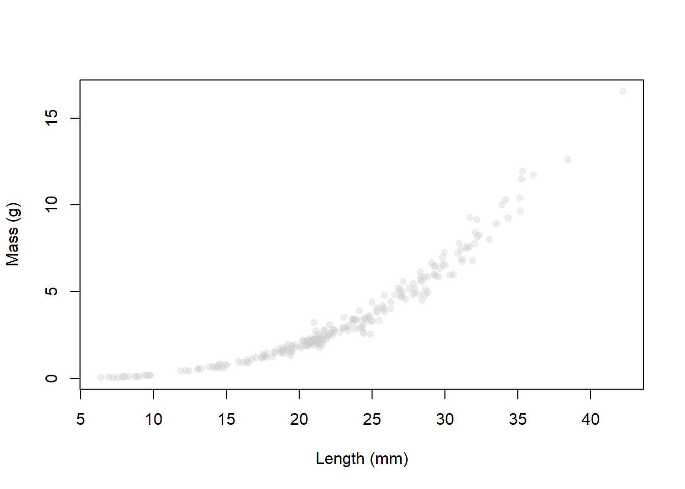
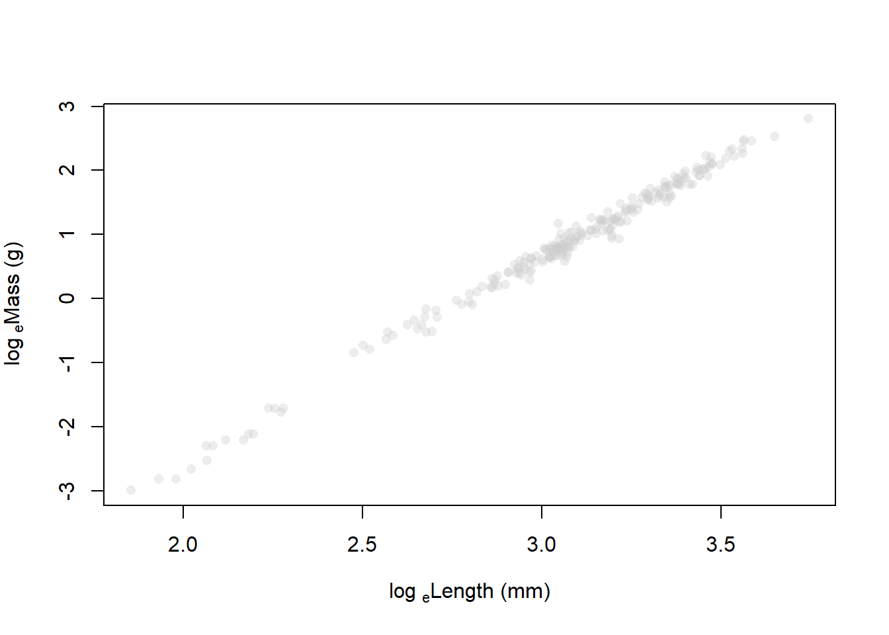
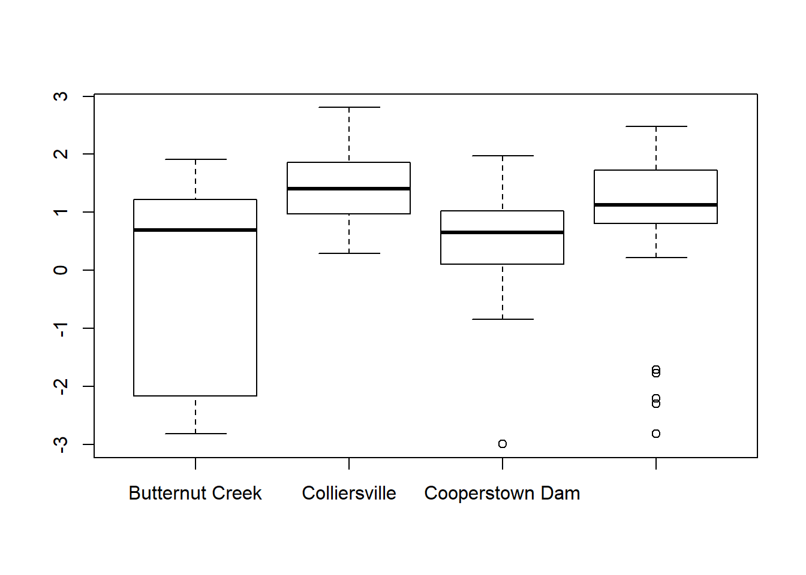
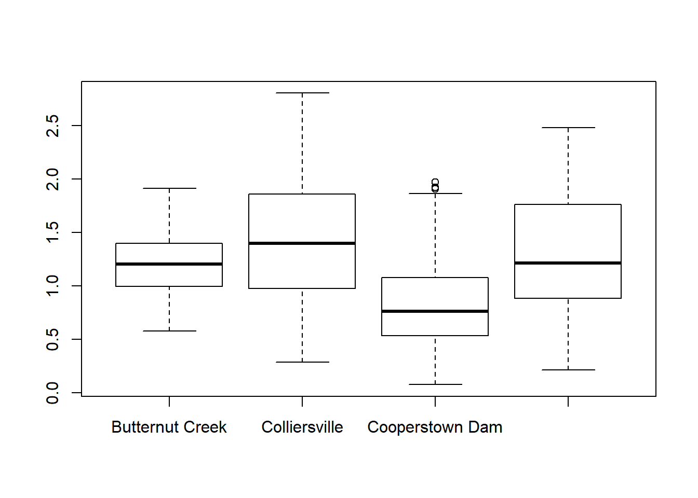
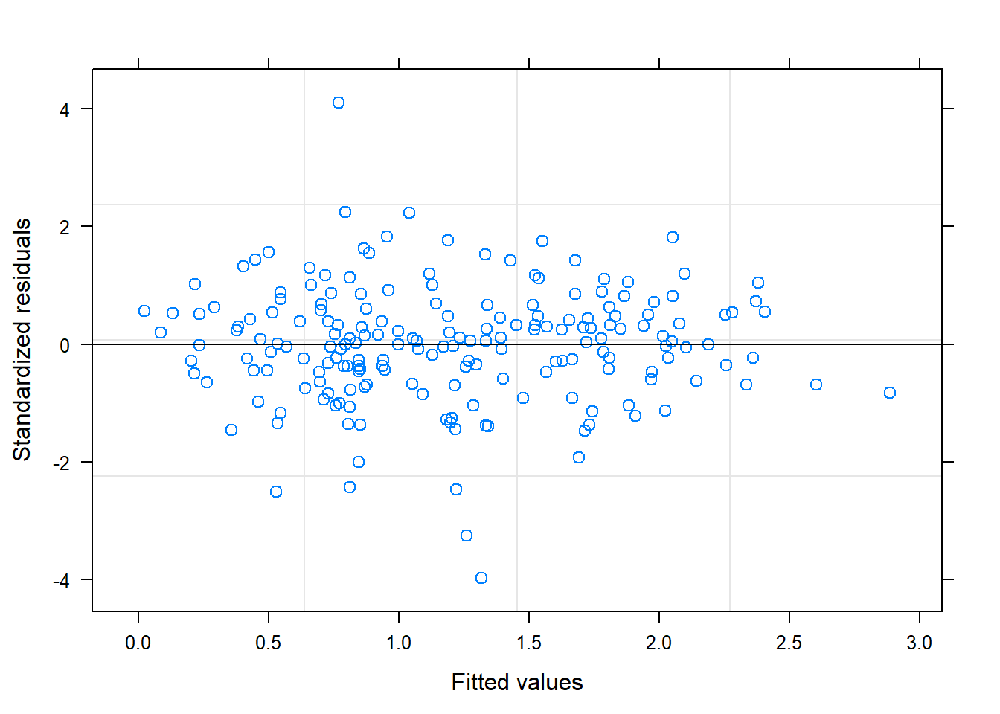
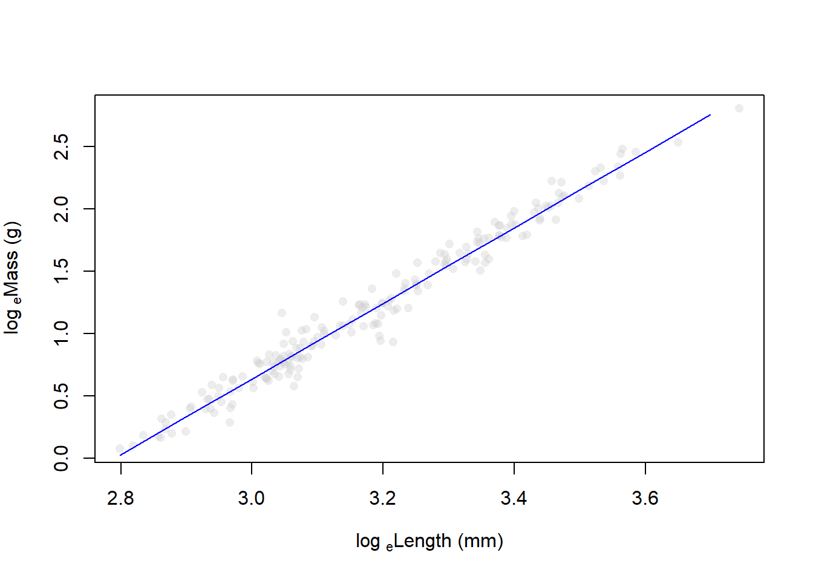
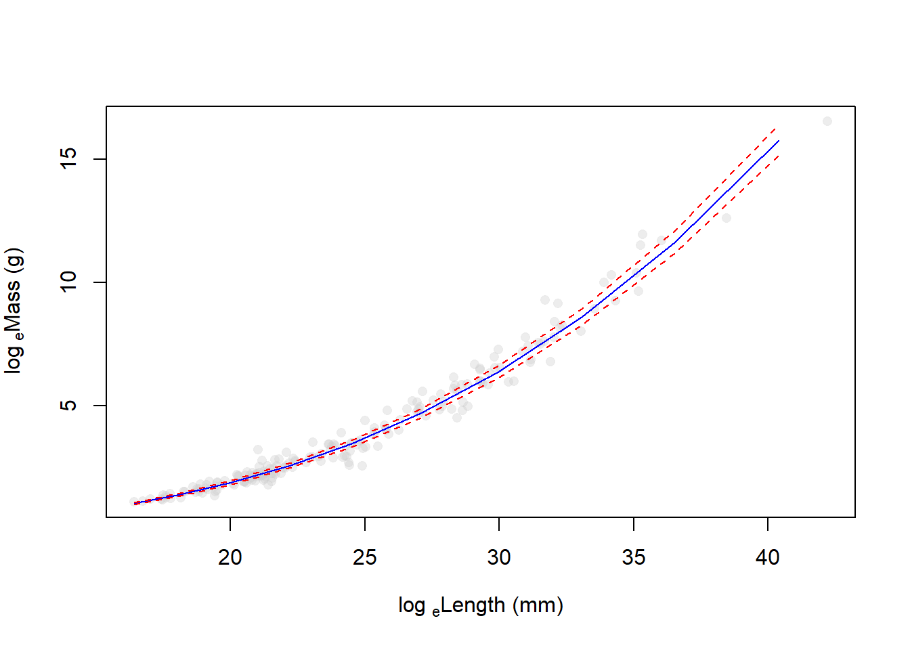
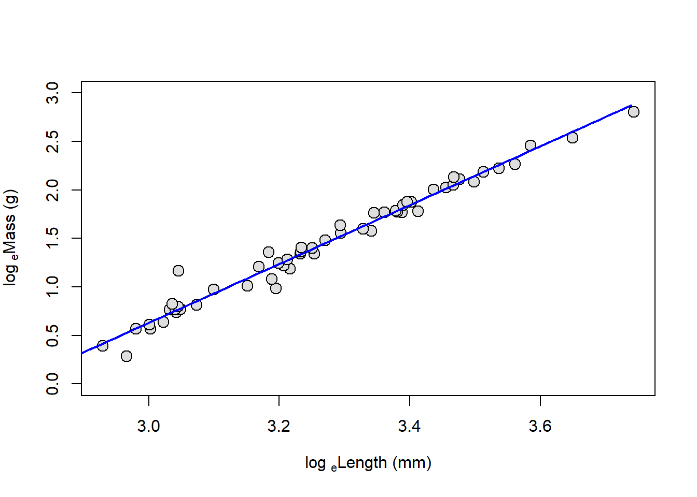
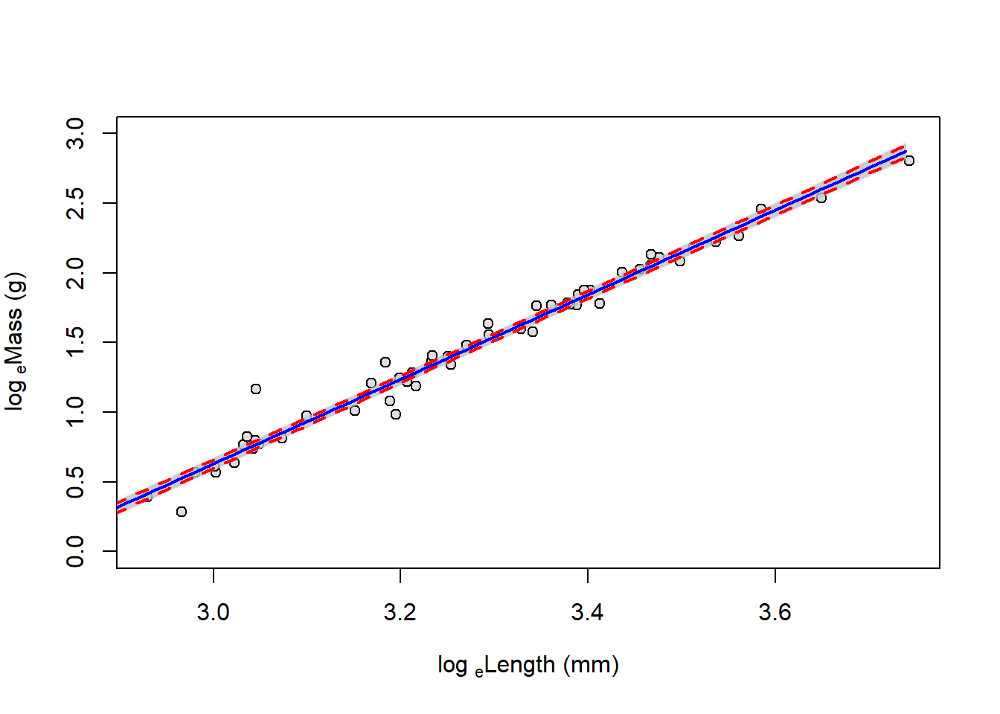

Linear mixed models (LMM)

Introduction
This week we will talk about extending linear models and generalized linear models to include “random effects” in the model, thus resulting in the “generalized linear mixed model” or GLMM. The GLMM is actually the most generalized formulation of the linear models that we have been discussing now for the past several weeks. All linear models (GLM, ANCOVA, ANOVA, regression, t-tests, etc.) are special cases of the GLMM. As such, we can think of the GLMM as the framework within which we have been working for weeks now! For this week, we will start with examples of the linear mixed model.
Assumptions of linear models
OMG, why is this guy always talking about assumptions of linear models no matter what we do?!
Just as we discussed last week, linear models are just a special case of the GLMM. That is, the linear model assumes a certain error distribution (the normal) that helps things work smoothly and correctly. During the last two weeks, we discussed how we can use link functions to relax the assumption of linear models with respect to normality of residuals and homogeneity of variances, as well as assumptions about the linearity of relationships between explanatory variables and responses of interest by using data transformation. This week, we continue to relax the underlying assumptions of linear models to unleash the true power of estimation in mixed effects models. This is essentially as far as the basic framework for linear modeling goes (with the exception of multivariate techniques), and all other cases (e.g. spatial and temporal autocorrelation regressions) are simply specialized instances of these models.
Let’s take another look at the assumptions of linear models. We will repeat the same mantra from the past few weeks. Here are the three assumptions that we explicitly use when we use linear models (just in case you’ve forgotten them):
- Residuals are normally distributed with a mean of zero
Independence of observations (residuals)
- Colinearity
- Auto correlation of errors (e.g., spatial & temporal)
- Homogeneity
- Linear relationship between X and Y
Assumption 1: Normality of residuals
We’ve seen these before, but let’s recap. For assumption 1, we are assuming a couple of implicit things: 1) The variable is continuous (and it must be if it’s error structure is normal), and 2) The error in our model is normally distributed.
In reality, this is probably the least important assumption of linear models, and really only matters if we are trying to make predictions from the models that we make, or when we are in gross violation of the assumption. Of course, we are often concerned with making predictions from the models that we make, so we can see why this might be important. However, more often we are in extreme violation of this assumption in some combination with assumption 4 above to such a degree that it actually does matter. For example, a response variable that is binomial (1 or zero) or multinomial in nature cannot possibly have normally distributed errors with respect to x unless there is absolutely no relationship between X and Y, right? So, if we wanted to predict the probability of patients dying from some medical treatment, or the presence/absence of species across a landscape then we can’t use linear models. This is where the link functions that we have been discussing really come into play. The purpose of the link function is to place our decidedly non-normal error structures into an asymptotically normal probability space. The other key characteristic of the link function is that it must be invertible, that way we can get back to the parameter scale that we want to use for making predictions and visualizing the results of our models.
Assumption 2: Independence of observations
This time we’ve broken assumption 2 in two components: Colinearity and autocorrelation of errors. Remember that the manifestation of these problems has primarily been in the precision of our coefficient estimates so far. This leads to the potential for change in the Type-I/II error rates in our models, causing us to draw false conclusions about which variables are important. As we discussed earlier in the course we expect to see some colinearity between observations, and we can deal with balancing this in our modeling through the use of model selection techniques to reduce Type-I and Type-II error. During the past couple of weeks, we examined tools that help us determine whether or not colinearity is actually causing problems in our models that go beyond minor nuisances. As for the second part, autocorrelation, we briefly touched on formulations of the GLM in our readings that included auto-regressive correlation matrices to relax this assumption of linear models and improve the precision of parameter estimates. This week, we will further extend this to include random effects so we can account for non-independence in the observations, and correlation in the residual errors of explanatory variables that could otherwise cause issues with accuracy and precision of our estimates. We will continue to use model selection as a method for determining tradeoffs between information gain and parameter redundancy that results from colinearity between explanatory variables, as well as for hypothesis testing.
Assumption 3: Homogeneity of variances
In past weeks, we looked at ways to reduce this issue by introducing blocking (categorical) variables to our models. Last week, we noted that this could be further mitigated through the use of weighted least squares and MLE within the GLM framework, which can be applied to a wide range of regression methods from linear models to GLMs and GLMMs. This week we will examine how we can use various formulations of the GLMM to account for heteroscedasticity in residual errors directly by including the appropriate error terms in our models. This essentially means that we can start to account for things like repeated measures, nested effects, and various other violations through the use of one tool…nifty!!
Assumption 4: Linearity and additivity
We’ve already looked at a couple of ways to deal with violations of these assumptions such as data transformation and/or polynomial formulations of the linear model. We will continue to apply these concepts this week as we begin to investigate the GLMM as robust framework for analysis.
Introducing the GLMM
The first thing you should understand about GLMMs is that they are useful for analyzing data from a large number of distributions (basically, you can use them for any underlying error structure). But, when we use specific error structures, or make certain assumptions about the manner in which the heterogeneity of variances is structured with respect to specific factors, this model is often given specific names. For example, repeated measures ANOVA (or ANCOVA), nested ANOVA (or ANCOVA), factorial ANOVA (or ANCOVA), linear mixed models, linear mixed effects models, and generalized linear mixed effects models are all just different formulations of the GLMM with different names. It sounds confusing, but just remember this: any linear model with combinations of fixed and random effects is, at it’s core, just another GLMM! If you can convince yourself of this, you will improve your ability to understand a wide range of experimental designs and accompanying statistical models by understanding this one model type.
The second thing you should understand to “get” GLMMs is what exactly is meant by a “random effect”. So far in this course we have only dealt with “fixed” effects. The fixed effect is a categorical variable that is used to explain some variation in our response of interest. When we use a fixed effect in a statistical model, we are making the assumption that the categories for this effect are “fixed”. In other words, we have assigned the the levels, or categories, based on some a priori knowledge that the levels themselves represent all possible groups that can be used to describe the data. Because of this definition, fixed effects are usually 1) things that we manipulate directly (like dosage or some other treatment), or 2) relatively simple grouping variables such as sex. By contrast, a “random effect” is an effect that we do not generally set ahead of time or manipulate, but rather one which is considered to be a sample from a population of potential categories that we cannot census or (often) control. Please note that there is not a single, widely accepted definition for either of these things in applied statistics and the definition can be context-specific. It becomes all the more confusing when we switch between maximum likelihood estimation and Bayesian inference. Don’t take it from me, though. Ask one of the world’s leading experts on the matter here.
Linear mixed models
We will start our explorations into GLMM by looking at the somewhat familiar case of “normal” data, whatever mythical meaning it may have. As with the relationship between ANOVA and GLM, we can say that the linear mixed model (LMM) is just a special case of the GLMM (hence the name), both of which belong to the group of multi-level or hierarchical models that house basically every kind of model we have looked at this semester.
So, what is a mixed model? This is a model that, generally speaking, assumes at least one parameter of interest is drawn from a population of potential sample sets. We usually use these when we are dealing with repeated samples for some group or individual, or if we wish to account for some latent variable beyond our control (e.g., lake or year). The use of random effects allows us to remove extraneous noise (variance) from the study system by explicitlty accounting for it. This can improve both the accuracy and the precision of estimates to make hypothesis testing on other explanatory variables more robust. It also allows us to generalize our conclusions to a broader scope (e.g. any lake instead of lakes X, Y, and Z).
Beyond these mundane uses, a “multi-level” approach to modeling allows for a great deal of flexibility in assumptions we make about the effects and associated errors in our model. We might assume within our model that effects are different between populations by assigning random intercepts and/or slopes. We can specify whether we think the influence of a continuous covariate is correlated with the starting point (correlated random slopes and intercepts). There are even rare cases when we might wish to examine random slopes with shared intercepts or vice versa. In Bayesian inference we can use information at higher levels of organization, like the North American Range of a species, to inform parameter estimation at lower levels, such as individual populations.
The point here is that random effects on a given parameter need not be a “nuisance” for which we wish to account: it may be the very thing we wish to harness for inference, estimation, or prediction.
As with so many things, these tools are often best investigated through the use of a worked example. Generally speaking, we want the grouping variable we use to specify random effects to contain a relatively large number of potential levels (usually > 5, but often > 10) as this tends to result in more accurate, and more precise parameter estimates. We will look at a case to start in which we use fewer for the sake of demonstration.
Worked example
Let’s start by loading in a new data set. These data come from a preliminary study of rusty crayfish Faxonius rusticus density in various tributaries to the Susquehanna River. The data were collected as part of a summer research project by one of our former high-school interns at the SUNY Oneonta Biological Field Station .
# Read in the data file
# We are reading it in with the optional
# argument because we don't want to deal
# with code relicts if we start
# dropping factor levels
cray <- read.csv("cray.csv", stringsAsFactors = FALSE)# Look at the data structure
str(cray)
'data.frame': 231 obs. of 7 variables:
$ site : chr "Cooperstown Dam" "Butternut Creek" "Wharton Creek" "Butternut Creek" ...
$ date : chr "6/28/2018" "7/9/2018" "7/12/2018" "7/9/2018" ...
$ time : int 36 52 48 52 52 52 48 52 48 52 ...
$ catch : int 85 20 603 20 20 20 603 20 603 20 ...
$ cpue : num 141.7 23.1 753.8 23.1 23.1 ...
$ length: num 6.39 7.25 6.91 7.56 7.9 8.04 7.89 8.74 8.32 8.99 ...
$ mass : num 0.05 0.06 0.06 0.07 0.08 0.1 0.1 0.11 0.11 0.12 ...# And, have a look at the first few lines of data
head(cray)
site date time catch cpue length mass
1 Cooperstown Dam 6/28/2018 36 85 141.66667 6.39 0.05
2 Butternut Creek 7/9/2018 52 20 23.07692 7.25 0.06
3 Wharton Creek 7/12/2018 48 603 753.75000 6.91 0.06
4 Butternut Creek 7/9/2018 52 20 23.07692 7.56 0.07
5 Butternut Creek 7/9/2018 52 20 23.07692 7.90 0.08
6 Butternut Creek 7/9/2018 52 20 23.07692 8.04 0.10We have a fairly straightforward data set this week. There are 231 observations of 7 variables. Each of the observations (rows) corresponds to a rusty crayfish that was collected and measured (length in mm and mass in g) at one of several sites on a given date. The variable catch is the total number caught by electrobugging over a given time (minutes). To compare density between sites, catch was divided by (time/60) to calculate catch per unit effort (cpue) as number of crayfish per hour. Therefore, observations of cpue, catch, and time correspond to unique date and site combinations, but length and mass represent unique individuals within site and date.
Our primary objective in this study was to collect baseline data. But curiousity led us to explore variation in the condition of crayfish when we thought we were noticing skinnier crayfish in sites of higher density. Length-weight regressions are one tool that is commonly used to investigate changes in volumetric growth with increasing length. In the absence of a standardized condition metric such as that widely applied in fish populations, relative weight (Wr), we thought this might offer some insight into variability in condition.
What follows is a steroid-injected version of the analysis we started with.
Length-weight relationships in animals are generally parameterized by log-transforming length and mass. This is because the relationship between the two is exponential, or can be described using a power functino (ouch, think back to intro bio). For a given unit increase in length, we expect mass to increase as an approximately cubic function of length.
We can see this in our un-transformed data pretty cleanly:
# Plot the raw data
plot(x = cray$length,
y = cray$mass,
pch = 21,
bg = rgb(.8,.8,.8,.35),
col = rgb(.8,.8,.8,.05),
xlab = 'Length (mm)',
ylab = 'Mass (g)'
)
The relationship depicted above can be expressed mathematically as:
\[W = aL^b,\]
and statistically as:
\[W_i = a {L_i}^b e^{\epsilon_i},\]
where \(W_i\) is mass of individual \(_i\) (we use \(M\) for mortality in fisheries), \(L_i\) is length, \(a\) and \(b\) are the coefficient and exponent describing change in mass as a power function of length, and \(\epsilon_i\) is the multiplicative error term for each crayfish (residuals change with length). Here, \(b\) also has interpretation relative to allometry in growth patterns, where values of 3.0 indicate isometry, values below 3 indicate negative allometry, and values above 3 indicate positive allometry in the length-weight relationship. This means that at values much above 3, we would expect individuals to get heavier faster relative to their length at large sizes.
Now, we can certainly estimate this kind of relationship using nonlinear regression, and we will look at similar cases later in the semester where we can’t avoid it. But, nonlinear regression can get a little unstable due to inherent correlations between parameters, and the multiplicative error described above. So, it can be easier to log-transform both sides of the equation to make the relationship linear and achieve a constant error across the range of x (homoscedasticity). As a result, we generally linearize relationships like this to improve modeling whenever we can, in this case by taking the natural logarithm of both sides of the equation:
\[log(W_i) = log(a) + b \cdot log(L_i) + \epsilon_i\]
Now, that should look a whole lot like the linear models we have been talking about all semester. In fact, by substitution, we could say that:
\[Y = \beta_0 + \beta_1 \cdot X_i + \epsilon_i\]
where \(Y\) is log(mass), and \(X\) is log(length). Then, we just need to remember that \(\beta_0\) is estimated on the log scale.
We can take a look at how this looks in our data by plotting the transformed data.
Start by log-transforming length and mass
Plot the relationship. Note that only the names have been changed
# Plot the raw data
plot(x = cray$loglength,
y = cray$logmass,
pch = 21,
bg = rgb(.8,.8,.8,.35),
col = rgb(.8,.8,.8,.05),
xlab = expression(paste('log '[e],'Length (mm)')),
ylab = expression(paste('log '[e],'Mass (g)'))
)
If nothing else, this tells me we need to go after more small cray this summer. For now, let’s get rid of all crayfish weighing less than 1 g because the data are sparse down there and a quick glance at our residuals withing groups will show that this results in non-normality in the residuals for the Butternut Creek site, specifically. Have a look:

# Drop the measurements for crayfish < 1 g
cray <- cray[cray$mass > 1, ]
boxplot(logmass~site, data=cray)
Wow, what a mess. Much better now, at least. Moving on with the analysis…
Next, we will take a look at a few different ways to analyze these data using maximum likelihood estimation and Bayesian inference. Our goal here is to estimate the relationship between length and mass while accounting for inherent variability between populations.
Random-intercepts model
First, we will analyze the data assuming that the intercepts for our linear model can vary between populations, but the relationship between length and mass is the same across all populations. This is a very common approach in many ecological and biological applications, as it often is the case that we are just trying to account for sampling design when we do this kind of analysis.
REML estimation
This is really straightforward to do in R. First, we will load the nlme package (we will move to lme4 for GLMM next week).
Next, we fit the model. Notice that now we have to add an argument to speficy a random effect of site on the intercept 1.
Being responsible individuals, we now have a look at the residuals to make sure we’ve met assumptions of normality and homoscedasticity:

That’s looking about as good as we could hope for, so now let’s go ahead and crack open the model summary.
# Print the summary
summary(craymod)
Linear mixed-effects model fit by REML
Data: cray
AIC BIC logLik
-336.2555 -323.1841 172.1278
Random effects:
Formula: ~1 | site
(Intercept) Residual
StdDev: 0.02387458 0.09688635
Fixed effects: logmass ~ loglength
Value Std.Error DF t-value p-value
(Intercept) -8.475674 0.12171888 191 -69.63319 0
loglength 3.037407 0.03790935 191 80.12289 0
Correlation:
(Intr)
loglength -0.993
Standardized Within-Group Residuals:
Min Q1 Med Q3 Max
-3.97965989 -0.48449678 0.03941688 0.54656796 4.10942573
Number of Observations: 196
Number of Groups: 4 For now, we will skip the usual walkthrough of all the wonderful tidbits that R has to offer and cut right to the chase. We can see from the table for our fixed effects that we have successfully detected the relationship between length and mass (p < 0.05), but this should come as no surprise based on the plot we saw.
We can see that the estimated sd for our intercept is fairly low, so we may not need to specify this as a random effect were we concerned about model complexity. Given that we are interested in this random effect, and that we (in this case) want to think of streams having been sampled from a broader population of streams, we will retain it in our model. From here, we could go on to make predictions across populations using our fixed intercept and slope, or we could use the population specific intercepts and the shared slope.
First, let’s plot using the shared intercept from our fixed effects table:
# Start by making a sequence of new lengths
# on the log scale
lens <- seq(from = min(cray$loglength),
to = max(cray$loglength),
by = .1)
# Now, get the fixed effects
# coefficients from the model
fcoeffs <- craymod$coefficients$fixed
# We can make the mean predictions
# fairly easily here
pred <- fcoeffs[1] + fcoeffs[2] * lens
# And we could plot them on the log scale
# Plot the raw data
plot(x = cray$loglength,
y = cray$logmass,
pch = 21,
bg = rgb(.8,.8,.8,.35),
col = rgb(.8,.8,.8,.05),
xlab = expression(paste('log '[e],'Length (mm)')),
ylab = expression(paste('log '[e],'Mass (g)'))
)
lines(x=lens, y=pred, col='blue')
Of course, we could also plot these data on the real scale if we were concerned about actually describing the trend of interest, and at the population level, we can use the diagonal element of the variance-covariance matrix to represent uncertainty in our predictions:
# We can make the mean predictions
# fairly easily here
pred <- fcoeffs[1] + fcoeffs[2] * lens
# Now add the upper and lower confidence
# intervals for the relationship
sds <- diag(vcov(craymod))
lpred <- (fcoeffs[1]-1.96*sds[1]) + (fcoeffs[2]-1.96*sds[2]) * lens
upred <- (fcoeffs[1]+1.96*sds[1]) + (fcoeffs[2]+1.96*sds[2]) * lens
# Plot the raw data
plot(x = cray$length,
y = cray$mass,
pch = 21,
bg = rgb(.8,.8,.8,.35),
col = rgb(.8,.8,.8,.05),
xlab = expression(paste('log '[e],'Length (mm)')),
ylab = expression(paste('log '[e],'Mass (g)'))
)
lines(x = exp(lens), y = exp(pred), col = 'blue')
lines(x = exp(lens), y = exp(lpred), col = 'red', lty = 2)
lines(x = exp(lens), y = exp(upred), col='red', lty=2)
It is even simple enough for us to dig into the model and extract population-level intercepts here.
# Get population-level parameters
rcoeff <- coef(craymod)
# Have a look
rcoeff
(Intercept) loglength
Butternut Creek -8.494326 3.037407
Colliersville -8.482221 3.037407
Cooperstown Dam -8.477807 3.037407
Wharton Creek -8.448342 3.037407We can then go on to use each set of parameters shown here to make mean predictions for each stream. If want to plot the results for population 3, for example, our code would look like this:
# Plot the raw data
plot(cray$loglength[cray$site=="Colliersville"],
cray$logmass[cray$site=="Colliersville"],
ylim = c(0, 3), pch=21, bg='gray87',
cex=1.5,
xlab = expression(paste('log '[e],'Length (mm)')),
ylab = expression(paste('log '[e],'Mass (g)'))
)
# Make a sequence of new lengths
lens = seq(min(cray$loglength), max(cray$loglength), by=.01)
# Predict new values for mass from lens
masses = rcoeff[2,1] + rcoeff[2,2]*lens
# Add lines to the plot
lines(lens, masses, lty=1, lwd=2, col='blue')
But, we still don’t really have a great way of looking at differences between groups if we are interested in those. Why is this? We do not have the technology. Basically, computing group-specific variances is conceptually and programmatically challenging. But, we can use some simulation methods to do this, and some of these have been implemented in newer versions of the lme4 package and related packages.
IMO, if you are going to go through simulations just to approximate confidence intervals, you are probably interested in the group-level estimates as well, and you should really be thinking about Bayesian approaches at this point.
Bayesian analysis using JAGS
Next, we will demonstrate how to implement the same model in JAGS. In principle, we are doing the same thing here, but the approach is slightly more explicit.
Write the model
We start by specifying the model. The likelihood for the model is unchanged relative to what we would write for the fixed effects models with which we have worked previously. The only thing that changes is that instead of specifying priors on \(\alpha\) for each population using dnorm(0, 0.001), we specify each prior to using a mean of mu.int and a precision of tau.int. Here, mu.int and tau.int are hyperparameters, meaning that they govern the distribution from which our population-level parameters are drawn. Therefore, we need to specify hyperpriors for each of these parameters that can be used to estimate an overall (grand) mean effect. In the example below, we specify these using dnorm(0, 0.001) for mu.int and dunif(0, 100) for our variance (sigma.int).
# Write model
modelstring="
model {
# Likelihood
for (i in 1:n) {
# Random variable
mass[i] ~ dnorm(mu[i], tau)
# Expectation from linear model
mu[i] <- alpha[pop[i]] + beta* length[i]
}
# Priors
# Random intercepts
for (i in 1:ngroups){
alpha[i] ~ dnorm(mu.int, tau.int)
}
# Mean hyperparameter for random intercepts
mu.int ~ dnorm(0, 0.001)
# SD and precision hyperparameters
sigma.int ~ dunif(0, 100)
tau.int <- 1 / (sigma.int * sigma.int)
# Common slope
beta ~ dnorm(0, 0.001)
# Residual variance and precision
sigma ~ dunif(0, 100)
tau <- 1 / ( sigma * sigma)
}
"Package the data for jags
# Bundle data
cray.data <- list(
mass = cray$logmass,
length = cray$loglength,
pop = as.numeric(as.factor(cray$site)),
ngroups = length(unique(cray$site)),
n = nrow(cray)
)Provide initial values for stochastic nodes
# Inits function
inits <- function(){
list(
alpha = rnorm(length(unique(cray$site)), 0, 2),
beta = rnorm(1, 1, 1),
mu.int = rnorm(1, 0, 1),
sigma.int = rlnorm(1),
sigma = rlnorm(1))}Tell JAGS which parameters we want to trace
MCMC settings
Run the model in JAGS
library(R2jags)
# Start Gibbs sampling
out <-jags(cray.data,
inits, parameters,
model.file=textConnection(modelstring),
n.thin=nt, n.chains=nc, n.burnin=nb, n.iter=ni
)Now have a look at the results
First, we can take a look at the model coefficients and diagnostics. Here, I am just going to print the model results for mean, sd, 95% CRI, and Neff.
# Get parameter estimates all by themselves
res = out$BUGSoutput$summary[, c(1,2,3,7,8,9)]
# Inspect results
print(res, digits = 3)
mean sd 2.5% 97.5% Rhat n.eff
alpha[1] -8.5054 0.12280 -8.75e+00 -8.266 1.01 330
alpha[2] -8.4848 0.12197 -8.72e+00 -8.248 1.01 330
alpha[3] -8.4799 0.11591 -8.71e+00 -8.259 1.01 370
alpha[4] -8.4495 0.12034 -8.68e+00 -8.218 1.01 350
beta 3.0381 0.03725 2.97e+00 3.111 1.01 350
deviance -357.6311 3.62661 -3.63e+02 -348.951 1.00 660
mu.int -8.4798 0.12413 -8.72e+00 -8.237 1.01 350
sigma 0.0975 0.00507 8.82e-02 0.108 1.00 5000
sigma.int 0.0505 0.05183 6.56e-03 0.175 1.01 1800Judging by our diagnostics, it looks like our estimates have converged well, and we see that we have sufficiently sampled posteriors for all parameters of interest.
Finally, we can look at the results for the linear predictions. This week, we’ll take a look at how to present results for linear predictors. We will use the same example as we did for the model we fit in lme4. This time, the variance estimation is pretty straightforward, so we add 95% credible intervals for our predictions to the plot.
Make posterior predictions about length-weight relationship
# Tell r which population we are working with.
# We will store as a variable
# upfront so we can easily change
# populations by re-defining the variable,
# which I will call `i`. We will use
# population 3 to stay consistent with
# the example above
i=2
# Make a sequence of new lengths
lens = seq(min(cray$loglength), max(cray$loglength), by=.01)
# Extract posteriors that we want
# to work with (parameters for the pop i)
alpha = out$BUGSoutput$sims.list$alpha[,i]
beta = out$BUGSoutput$sims.list$beta
# Predict mass as a function of population and length
# Make a blank matrix to hold the predictions
preds = matrix(data = NA, nrow=length(alpha), ncol=length(lens))
# Now make predictions for each new
# value of length from each of the
# MCMC samples of alpha and beta.
for(j in 1:length(alpha)){
for(t in 1:length(lens)){
preds[j, t] = alpha[j] + beta[j] * lens[t]
}
}
# Plot the raw data for the population of interest, i
# Plot the raw data
plot(cray$loglength[cray$site==sort(unique(cray$site))[i]],
cray$logmass[cray$site==sort(unique(cray$site))[i]],
ylim = c(0, 3), pch=21, bg='gray87',
xlab = expression(paste('log '[e],'Length (mm)')),
ylab = expression(paste('log '[e],'Mass (g)'))
)
# Plot the posterior predictions
for(j in 1:length(alpha)){
lines(x = lens, y = preds[j, ], col=rgb(.7,.7,.7,.02), lwd=1)
}
# Calculate the mean and 95% CRIs for posterior predictions
muPred = apply(preds, 2, mean)
lowPred = apply(preds, 2, quantile, probs=0.025)
upPred = apply(preds, 2, quantile, probs=0.975)
# Plot the mean and 95% CRI for predicted probability
lines(lens, muPred, col='blue', lwd=2, lty=1)
lines(lens, upPred, col='red', lwd=2, lty=2)
lines(lens, lowPred, col='red', lwd=2, lty=2)
This work is licensed under a Creative Commons Attribution 4.0 International License. Data are provided for educational purposes only unless otherwise noted.